AI-Powered Smart Waste Management and Monitoring System. How to install it, run it, and use it as a visitor, a user or an administrator, written for people who have never seen it before.
| Part 1 | What this system is: the idea in plain words, and the roles (who can do what) |
| Part 2 | Installation: what software you need, step-by-step setup, starting the app, Docker option |
| Part 3 | User guide: for a first-time user (register, classify waste, history) |
| Part 4 | Administrator guide: admin login, live dashboard, bins, alerts, collections, analytics |
| Part 5 | Roles and permissions: complete table, and what the system does not have |
| Part 6 | Troubleshooting, security checklist and command cheat sheet |
setup_windows.bat and wait → double-click start_app.bat → the browser opens http://localhost:8000. The administrator password is printed at the end of the setup. No MySQL is needed for this route.
Users register on the website. The administrator logs in at /admin/login.People take a photo of a piece of waste. A trained artificial-intelligence model (a CNN) recognises what the waste is made of: plastic, paper, metal, glass or organic. The app shows how sure it is (the confidence), tells you how to dispose of the item, and puts it into the matching section of a virtual smart bin. Administrators watch all bins on a live screen, get an alert when a bin section is almost full, and record when the bin has been emptied.
| Word | Meaning |
|---|---|
| Virtual smart bin | A bin that exists in the software. It belongs to one location (for example Hostel or Library). |
| Compartment | Every bin has five compartments, one for each waste category. Each has its own maximum capacity in litres. |
| Confidence | How sure the AI is about its answer, as a percentage. Low confidence means you should retake the photo. |
| Fill % | Current load divided by the compartment's maximum capacity. A bin's status uses its fullest compartment. |
| Collection | The act of emptying a bin. The admin records it, and the bin's compartments go back to 0 %. |
| Recyclable | Plastic, paper, metal and glass count as recyclable. Organic waste counts as non-recyclable (it is compostable). |
The system has two kinds of accounts, plus visitors who have not logged in. There are no other roles.
| Role | How you get it | What you can do |
|---|---|---|
| Visitor | Nothing: just open the website. | See the landing page, register, log in. Nothing else. |
| User | Anyone can register on the website. New accounts are always User. | Classify waste with a photo, see the result and disposal advice, see their own history. |
| Admin | Cannot be created on the website. The first admin is created during installation; more admins are added by the person who runs the server (Part 4.11). | Live dashboard, bins and capacities, alerts, collections, analytics and reports, all users' classification log, locations. |
The two login pages are separate: a User account cannot sign in on the admin page, and an Admin account cannot sign in on the user page. The full permission table is in Part 5.
These steps were written and tested on Windows (commands are for PowerShell). The server computer needs the software below; the people who only use the app need just a web browser.
| Software | Version | Needed? | What it is for / where to get it |
|---|---|---|---|
| Python 3 (64-bit) | 3.10 to 3.13 (3.12 recommended; not 3.14) | Required | Runs the application and the AI model. python.org/downloads. During installation tick "Add python.exe to PATH". |
| MySQL Server | 8.x or 9.x | Optional | Only for the manual MySQL route (section 2.2). The one-click route uses a built-in SQLite database instead. MySQL stores users, bins and records. dev.mysql.com/downloads/installer. Remember the root password you choose. |
| MySQL Workbench | 8.x | Optional | A window to look inside the database. Comes with the MySQL installer. |
| Web browser | Edge, Chrome, Firefox | Required | To open the app. Recent version. |
| Git | any | Optional | Only if you download the project from GitHub with git clone. You can also download a ZIP. |
| VS Code | any | Optional | A code editor, handy for editing the .env file. |
| Docker Desktop | any | Optional | Only for the alternative "run in containers" route (section 2.7). |
| A webcam | - | Optional | Users can also upload photos from files, so a camera is not required. |
Computer: about 8 GB of RAM recommended (4 GB minimum), and about 3 GB of free disk space (the Python packages, including TensorFlow, take about 2.3 GB). An internet connection is needed once, during installation.
You do not need the image dataset or any AI training: the trained model (ml/model/waste_cnn.keras, 10 MB) is already inside the project.
This route was tested from a fresh copy of the project (no environment, no settings file, no database), including in a folder whose name contains a space. It uses a built-in SQLite database, so there is nothing else to install.
git clone https://github.com/seshasaikrishnachanumolu/AI.git
setup_windows.bat in the project folder. It checks your Python, creates a private environment, installs the packages (5 to 15 minutes; the window looks busy, that is normal), creates the settings file, the database, the administrator account, 5 locations and 6 virtual bins.
At the end it prints your admin email and admin password. Write them down (they are also saved in the file .env).start_app.bat. After a few seconds your browser opens http://localhost:8000. Keep the black window open while you use the app; close it to stop..bat file (common for downloaded files), click More info and then Run anyway. The files are plain text: you can open setup_windows.bat in Notepad and read exactly what it does.SECRET_KEY and a random admin password for your copy. You can run setup_windows.bat again at any time: it keeps your data and creates nothing twice.
After this, skip to Part 3 (users) or Part 4 (administrators). Section 2.2 below is only for people who want to use MySQL.Use this route only if you want the project to run on a MySQL database (what the original project brief asks for).
python --versionYou should see
Python 3.12.x or 3.13.x.C:\SmartWaste.
git clone https://github.com/seshasaikrishnachanumolu/AI.git C:\SmartWaste(or unzip the downloaded ZIP into that folder).
powershell and press Enter. Or:
cd C:\SmartWaste
python -m venv .venv .\.venv\Scripts\Activate.ps1The prompt now starts with
(.venv). If Windows says "running scripts is disabled", run
Set-ExecutionPolicy -Scope Process -ExecutionPolicy Bypass and try again. (Or skip activating and type .\.venv\Scripts\python instead of python in the commands below.)pip install -r requirements.txtThis downloads about 500 MB and takes 5 to 15 minutes depending on your internet speed. Wait until the prompt returns. Warnings in yellow are normal; red ERROR lines are not (see Part 6).
copy .env.example .env notepad .envRemove the
# in front of the MYSQL_ lines, then edit these lines and save (details in the table below):
SECRET_KEY=paste-a-long-random-text-here MYSQL_USER=root MYSQL_PASSWORD=your MySQL root password MYSQL_HOST=localhost MYSQL_PORT=3306 MYSQL_DATABASE=smart_waste ADMIN_EMAIL=admin@yourcollege.edu ADMIN_PASSWORD=a strong password you will remember
python setup_mysql.py python seed.pyThe first creates an empty database called
smart_waste. The second creates the 7 tables, the administrator account, 5 locations
(College Block A, College Block B, Hostel, Canteen, Library) and 6 virtual bins. It prints a line for each thing it created and ends with Database ready.
It is safe to run again: it never duplicates anything and creates no waste records.python serve.pyLeave this window open: it is the running server. (Shortcut: double-click
start_app.bat in the project folder; it also opens the browser.){"database":"up","status":"ok"}.python serve.py or start_app.bat); MySQL starts by itself with Windows.| Setting | Meaning |
|---|---|
SECRET_KEY | A long random text used to protect login sessions. Make one with: python -c "import secrets; print(secrets.token_hex(24))" and paste the result. Never share it. |
MYSQL_USER / MYSQL_PASSWORD | The same MySQL login you use in Workbench (usually user root). Special characters in the password are fine. |
MYSQL_HOST / MYSQL_PORT | Where MySQL runs. localhost and 3306 unless you changed them. |
MYSQL_DATABASE | Name of the database to create. Leave as smart_waste. |
ADMIN_EMAIL / ADMIN_PASSWORD | The login of the first administrator. Set these before running python seed.py the first time. They are only used when the admin account does not exist yet; editing them afterwards does not change an existing admin (to change a password later, see Part 4.11). |
MYSQL_... lines in .env start with # (the way .env.example ships), the app uses a small built-in SQLite file (instance/waste.db). That is what the one-click setup uses, and it is fine for trying, learning and demonstrations. Remove the # signs and fill in your password to use MySQL instead.Open MySQL Workbench, connect to localhost:3306 with your root password, and open the schema smart_waste. You will see the seven tables:
users, locations, smart_bins, bin_compartments, waste_records, collection_records, alerts.
Right-click a table and choose Select Rows to read it. Please do not edit rows by hand; use the app instead.
By default the server accepts connections from this computer only. To allow other devices, close the server, open PowerShell in the project folder and run $env:HOST="0.0.0.0"; .\.venv\Scripts\python serve.py (instead of start_app.bat). Then find the server computer's address with ipconfig (the IPv4 Address, for example 192.168.1.20) and open
http://192.168.1.20:8000 on the phone or laptop. Windows may ask to allow Python through the firewall: allow it on Private networks only.
On a phone, the Choose photo picker normally offers Take photo. The in-page Use webcam button only works on the server computer itself (localhost), because browsers allow camera access only on localhost or HTTPS.
Use this only on a network you trust.
python run.py starts a development server with automatic reloading on http://127.0.0.1:5000. Use serve.py (port 8000) for demonstrations and normal use.
Instead of installing Python and MySQL yourself, Docker Desktop can run both in containers. Create a .env file containing at least SECRET_KEY=..., start Docker Desktop, then:
docker compose up --build
Open http://localhost:8000. The first start builds the image (10 to 30 minutes, depending on your internet speed) and creates the database, admin account, locations and bins by itself. The admin login is
ADMIN_EMAIL / ADMIN_PASSWORD if set in .env, otherwise admin@smartwaste.local / Admin@12345. Stop with docker compose down.
docker compose) was checked for correct syntax but was not started end-to-end. If it misbehaves, use the normal installation above.The included model is ready to use (87.2 % accuracy on 984 images it had never seen). Only people who want to retrain it need the image dataset; see docs/MODEL_REPORT.md in the project.
For users You do not need any technical knowledge. You need a web browser and the address of the app (for example http://localhost:8000 or the address your administrator gives you).
The landing page explains the system. The counters show real totals (items classified, bins, locations). At the top right use Get started to create an account or Log in if you already have one.
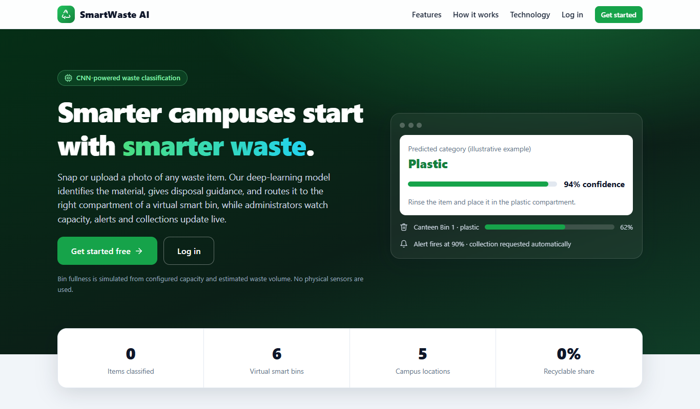
/register).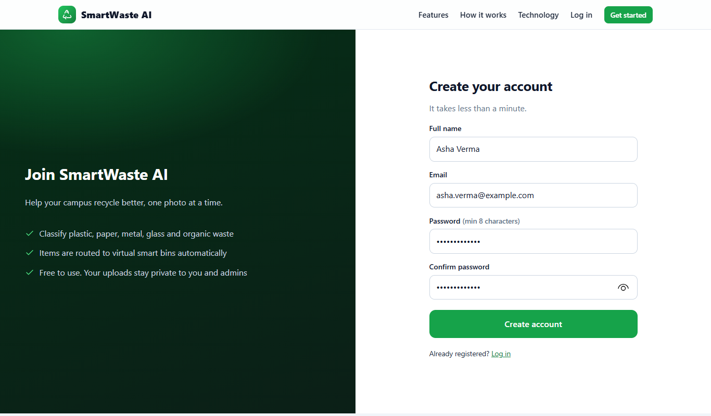
Enter your email and password on the login page. After logging in you land on your Overview page. Use the menu on the left (on a phone, the ☰ button) to move around. When you are finished, click Log out at the bottom of the menu.
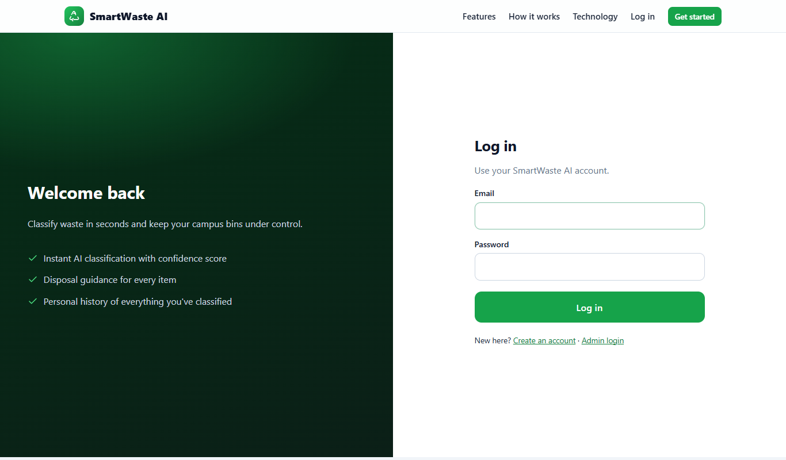
The first time, it is empty and invites you to classify your first item. Later it shows how many items you classified, how many were recyclable, your recyclable share, your latest items and a bar for each category.
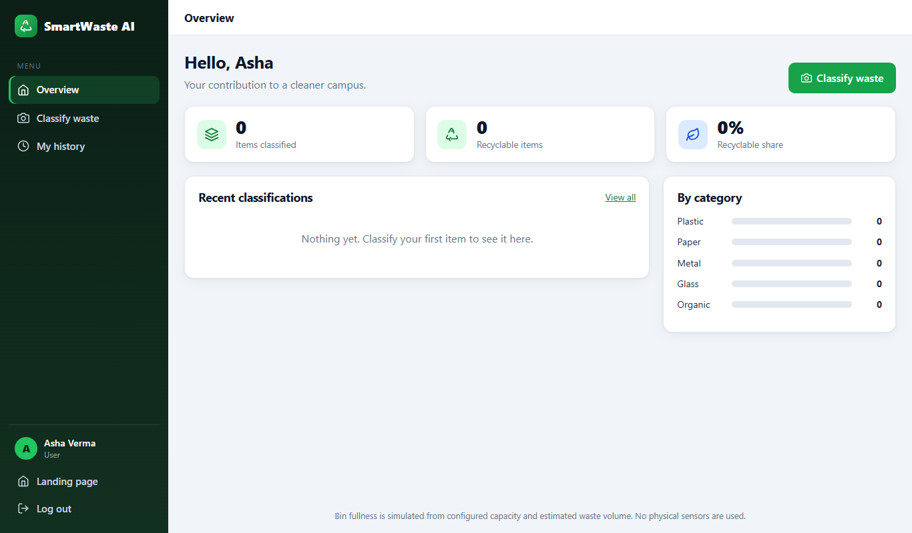
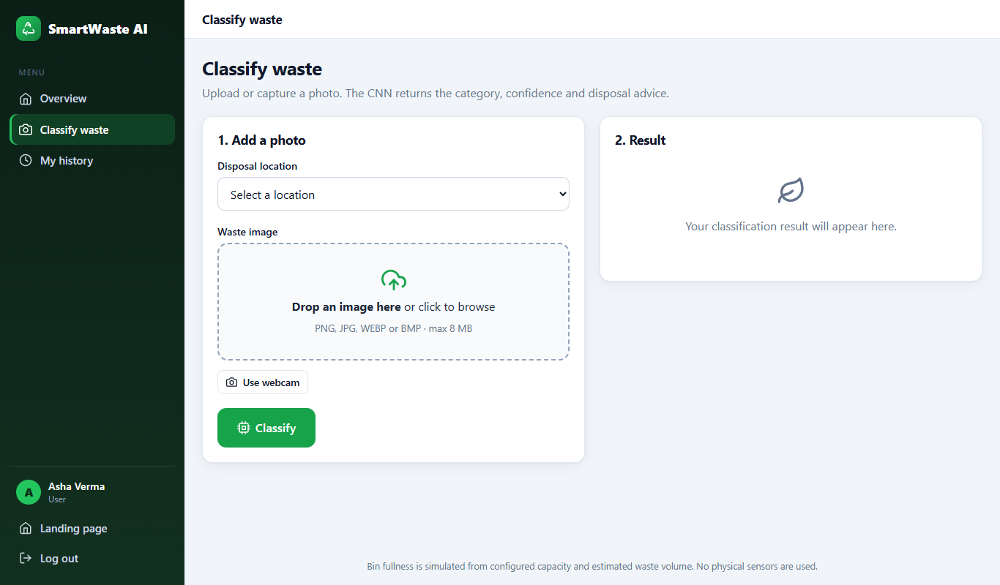
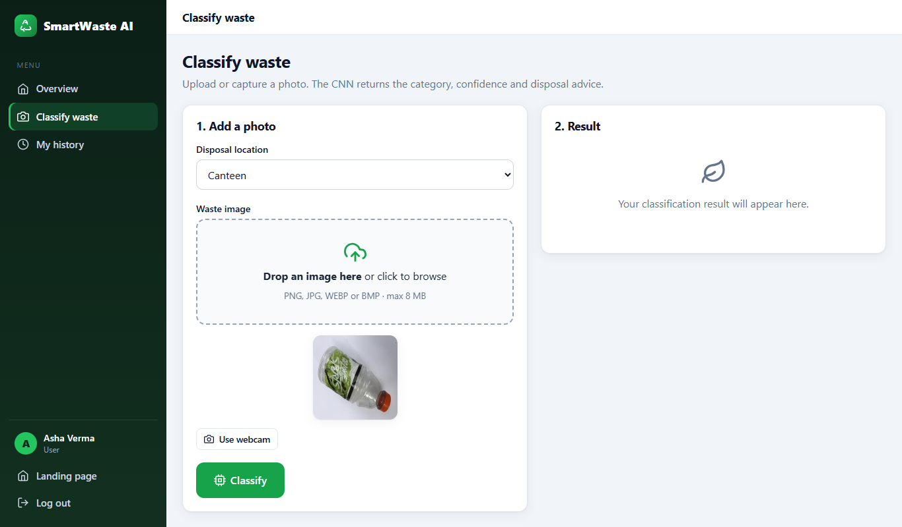
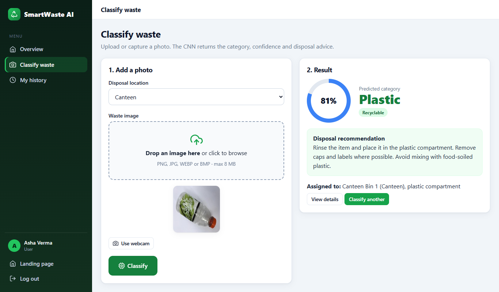
| Predicted category | What the AI thinks the item is: plastic, paper, metal, glass or organic. |
| Confidence ring | How sure the AI is, as a percentage. Higher is better; a low number is a hint to retake the photo. |
| Recyclable badge | Recyclable (plastic, paper, metal, glass) or non-recyclable / compostable (organic). |
| Disposal recommendation | A short instruction, for example "Empty and rinse the container and place it in the glass compartment." |
| Assigned to | Which virtual bin and compartment received the item, for example "Canteen Bin 1, plastic compartment". |
| Message | What to do |
|---|---|
| "Select the disposal location." | Pick a location in the drop-down. |
| "Choose an image or capture one with the webcam." | Add a photo first. |
| "Unsupported file type…" or "Image too large (max 8 MB)." | Use a PNG/JPG/WEBP/BMP smaller than 8 MB. |
| "No space left in the … compartment at this location. Collection is required." | The item was recorded, but every matching compartment there is full, so it was not put in a bin. Tell the administrator or try another location. |
| "The AI model has not been trained yet…" | A setup problem: tell the administrator (the model file is missing). |
Click My history to see every item you have classified, newest first, as cards with the photo, category, confidence, date and time, location and the disposal advice. Click a card for the full result. There are 12 cards per page; use Newer / Older at the bottom. Only you and the administrators can see your photos.
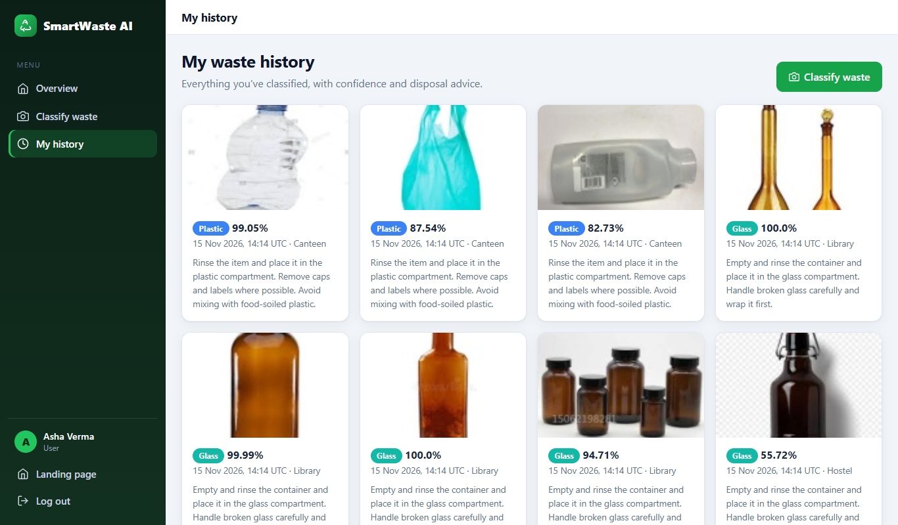
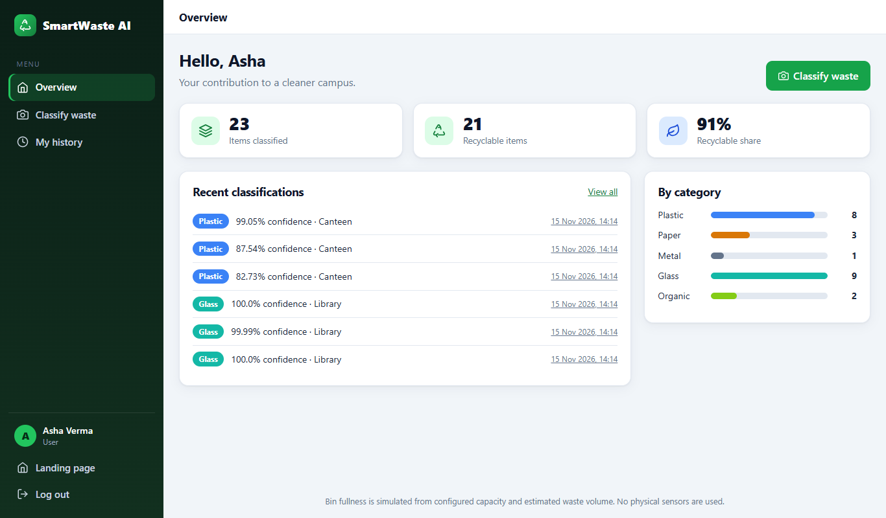
The app adapts to small screens. Open the menu with the ☰ button. When you tap the image box, most phones offer Take photo or Choose from gallery.
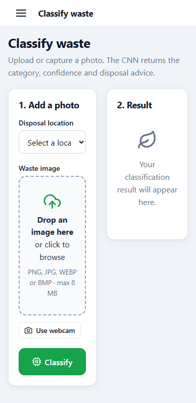
For administrators Administrators monitor bins and manage collections. There is nothing to install: you use the same website with a different login.
http://localhost:8000/admin/login. You can also click Admin login in the footer of the landing page or on the user login page.setup_windows.bat, they were printed at the end of the setup and are saved in the file .env (open it in Notepad: ADMIN_EMAIL and ADMIN_PASSWORD). If you set up manually and kept the example values, they are admin@smartwaste.local and Admin@12345.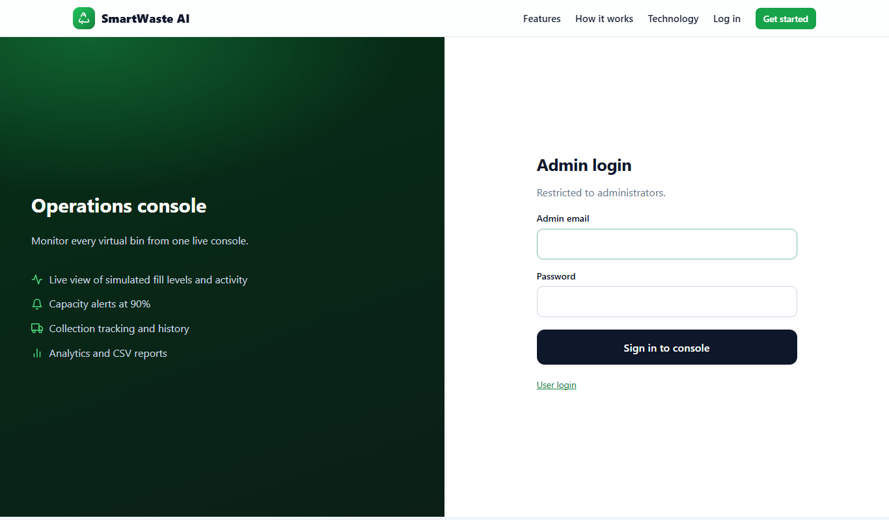
Admin@12345, change it right away (section 4.11), because it is public. If login fails with "Invalid email or password", the most common reasons are: a normal User account was used (those cannot sign in here), .env was edited after the first setup (that does not change an existing admin), or the password was changed later with manage_admin.py.| Menu item | What it is for |
|---|---|
| Live dashboard | The control room: totals, bins, activity, alerts. Updates itself every 5 seconds. |
| Smart bins | List of all bins; add a bin; open a bin to set capacities. |
| Alerts | Capacity alerts raised at 90 %. |
| Collections | Pending and completed collections; mark a bin as collected. |
| Analytics | Daily, weekly and monthly charts; export to CSV. |
| Classification log | Every classified item from every user, with filters and CSV export. |
| Locations | Add places where bins are installed. |
The green Live badge (top right) shows the page is updating. If the server stops it turns red and says Reconnecting…; if your login expired it says Session expired: log in again. Numbers briefly flash when they change, and a pop-up appears when a new alert is raised.
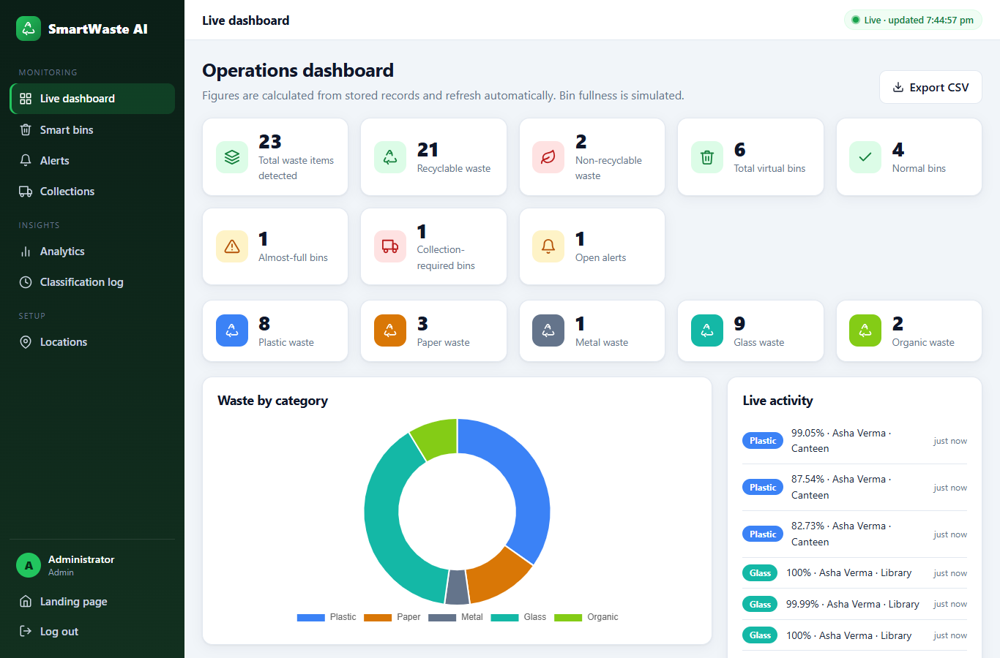
| Card | Meaning |
|---|---|
| Total waste items detected | Number of classifications stored. |
| Recyclable / Non-recyclable waste | Plastic + paper + metal + glass, versus organic (the rule is set in config.py). |
| Plastic, Paper, Metal, Glass, Organic waste | Items per category. |
| Total virtual bins | Bins that exist. |
| Normal bins | Fullest compartment below 70 %. |
| Almost-full bins | Fullest compartment from 70 % up to (not including) 90 %. |
| Collection-required bins | Fullest compartment at 90 % or more. |
| Open alerts | Alerts not yet resolved. |
Below the cards are the Waste by category chart, the Live activity feed (newest items with confidence, user and location) and a card for every bin. A bin card has a green top edge when Normal, amber when Almost Full and red when Collection Required. Click a card to open that bin.
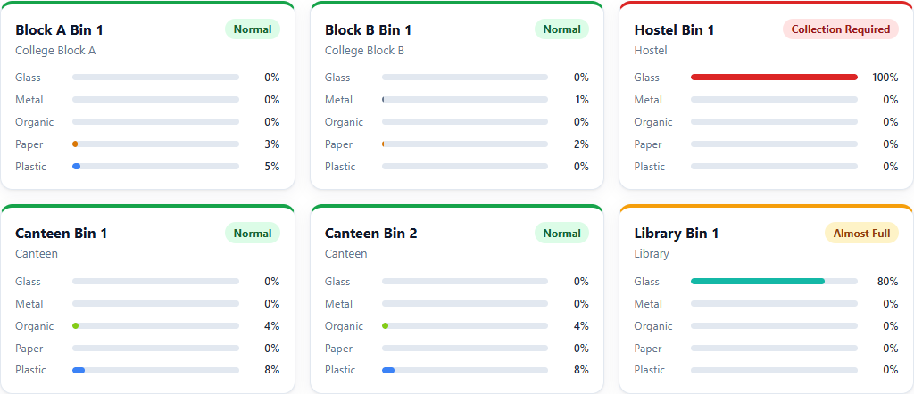
To add a bin: open Smart bins, type a name (for example "Library Bin 2"), choose its location, enter the capacity per compartment in litres (default 20) and click Create bin. Each new bin automatically gets five compartments, one per category.
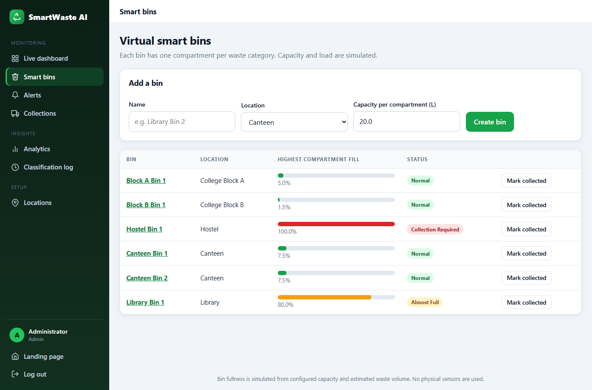
To change capacities or manage one bin: click its name.
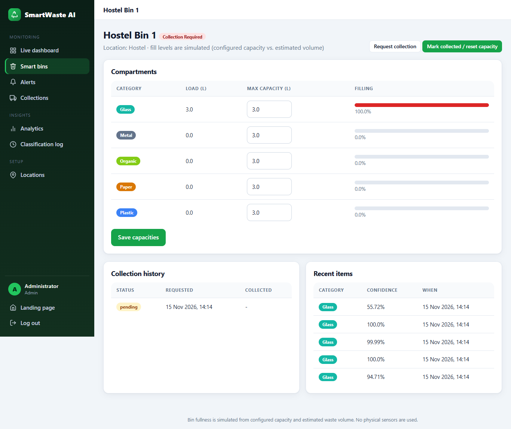
| Rule | Value (set in config.py) |
|---|---|
| Estimated volume added per item | Plastic 0.5 L · Paper 0.3 L · Metal 0.25 L · Glass 0.6 L · Organic 0.8 L |
| Default compartment capacity | 20 L (changeable per bin in the app) |
| Status thresholds | Normal below 70 % · Almost Full 70 % to under 90 % · Collection Required 90 % or more |
| Which bin gets the item? | The emptiest compartment of that category among the bins at the chosen location that still has room. If none has room, the item is saved as "Unassigned". |
Changing the volumes or thresholds means editing config.py and restarting the server; there is no screen for it.
When any compartment reaches 90 % of its capacity the system automatically (1) raises an alert, (2) creates a pending collection for that bin, and (3) shows a pop-up on the dashboard. One alert exists per compartment while it is open.
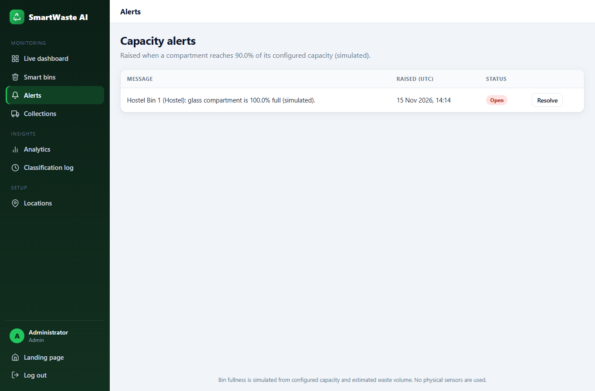
The Collections page has three parts: Pending collections (bins to empty, with location and fill), Almost-full bins without a collection request (click Request collection to schedule one early) and Completed collections.
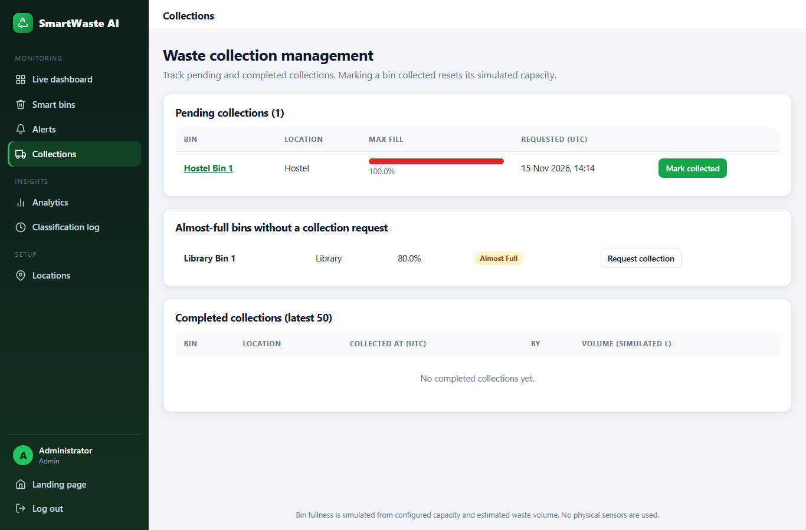
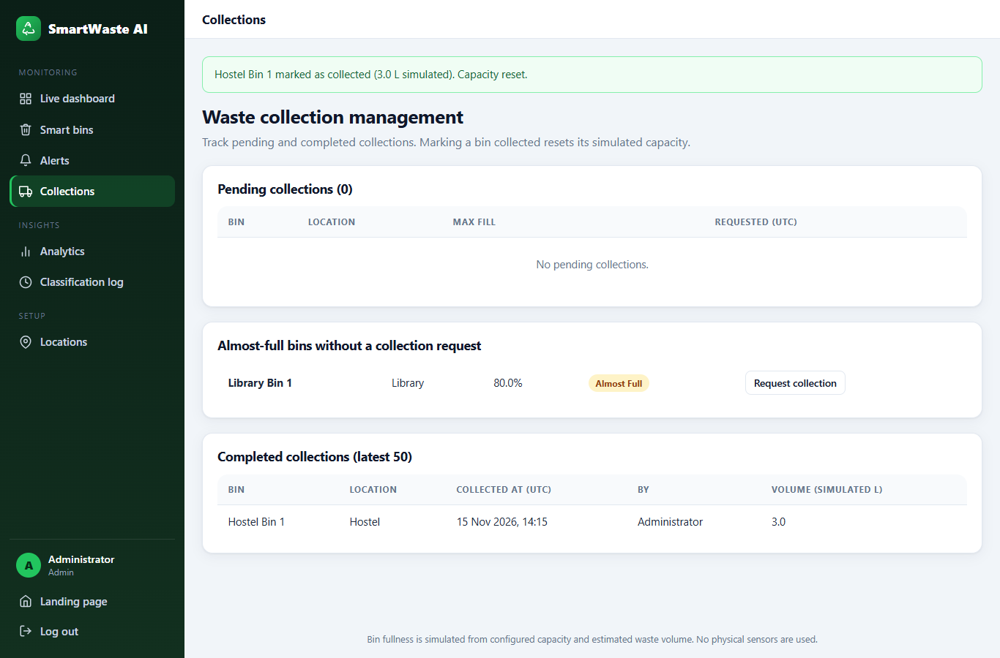
Choose Daily (7 days), Weekly (8 weeks) or Monthly (12 months). The charts show items per period by category, the category split and the location split. Use Export CSV to download a spreadsheet of all classifications.
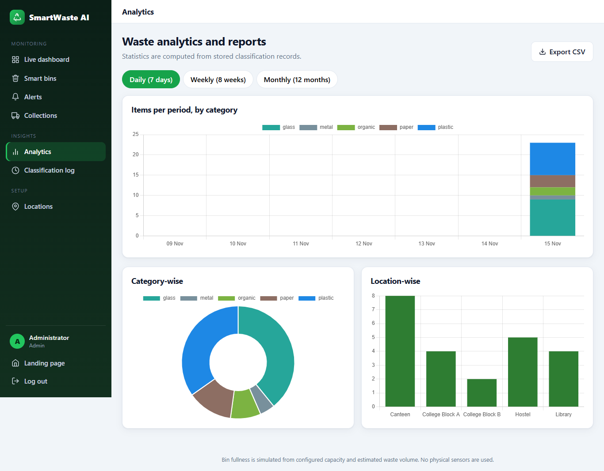
Every classification by every user: when (UTC), who, category, confidence, recyclable or not, and the bin location. Filter by Category and Location, then Export CSV to download exactly what you filtered. 20 rows per page.
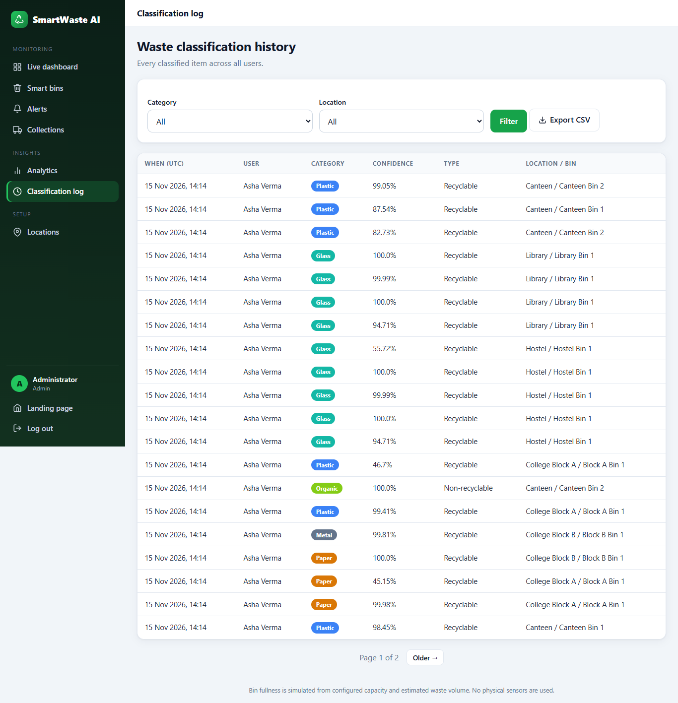
To add a new place (for example "Sports Complex"): open Locations, type the name and an optional description, click Add location. Then go to Smart bins and create a bin there. Users will see the new location in the Classify page's list.
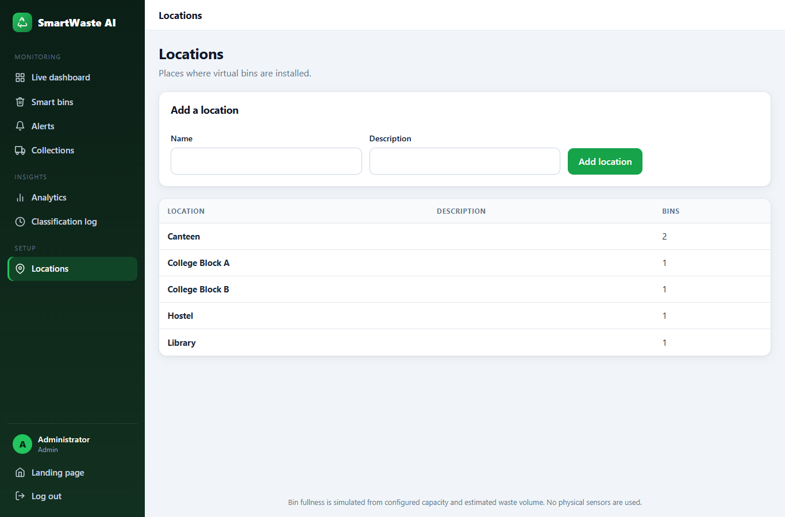
These tasks are done by the person who runs the server, in PowerShell inside the project folder (with the environment active). The password is typed at a hidden prompt.
| I want to… | Command |
|---|---|
| Change the administrator's password | python scripts/manage_admin.py admin@smartwaste.local |
| Add another administrator (a new person) | python scripts/manage_admin.py manager@college.edu --name "Facility Manager" |
| Turn an existing user into an administrator | python scripts/manage_admin.py asha.verma@example.com --make-admin |
| Reset a user's forgotten password (stays a normal user) | python scripts/manage_admin.py asha.verma@example.com --reset-user |
Passwords must have at least 8 characters. Every administrator has the same full powers: there are no "junior" or "senior" admins.
To show the live dashboard without taking many photos, with the server running open a second PowerShell window and run:
python scripts/demo_traffic.py --count 30 --delay 3 # sends real test photos through the AI python scripts/demo_traffic.py --cleanup # removes the demo user and its records afterwards
The demo photos come from the project's test image set and go through the normal classification process. Use the clean-up command before real use so statistics stay genuine.
| Feature | Visitor | User | Admin |
|---|---|---|---|
| See the landing page and public counters | Yes | Yes | Yes |
| Register a new account | Yes | - | - |
| Log in | Yes | Yes | Yes (admin page) |
| Classify waste with a photo or webcam | No | Yes | Not in menu |
| See own classification history and results | No | Yes | Not in menu |
| See other people's classification records | No | No | Yes (Classification log) |
| Live dashboard and alerts | No | No | Yes |
| Create bins, set compartment capacities, add locations | No | No | Yes |
| Request and record collections, resolve alerts | No | No | Yes |
| Analytics, classification log, CSV export | No | No | Yes |
| Create administrators / reset passwords | No | No | Server owner only (command line) |
If a User types an admin address (for example /admin/) the app answers "Access denied"; a Visitor is sent to the login page.
| What you see | Likely cause | What to do |
|---|---|---|
setup_windows.bat says No suitable Python found | Python missing, too old, too new (3.14) or 32-bit | Install Python 3.12 (64-bit) from python.org with Add python.exe to PATH ticked, then run setup_windows.bat again. |
| Setup stops while installing packages | Internet interrupted (the download is about 500 MB) | Run setup_windows.bat again; it continues. If it keeps failing, try another network. |
start_app.bat says not set up yet | Setup has not been run | Double-click setup_windows.bat first. |
"Windows protected your PC" when opening a .bat file | Windows warns about downloaded files | Click More info, then Run anyway. |
| Browser says "can't connect" or port 8000 already in use | The server window was closed, or another program uses port 8000 | Start start_app.bat again and wait 15 seconds. If the port is busy, in PowerShell run $env:PORT="8001"; .\.venv\Scripts\python serve.py and open http://localhost:8001. |
No module named ... | The command ran with a different Python than the project's | Use the project's own Python: .\.venv\Scripts\python serve.py. |
| First classification takes 10 to 30 seconds | The AI model loads on first use | Normal. Later classifications take under a second. |
Access denied for user 'root' when running setup_mysql.py | Wrong MYSQL_PASSWORD in .env | Correct it (same password as Workbench), save, run again. |
Can't connect to MySQL server | The MySQL service is not running | Open Services (Win+R, services.msc), find "MySQL…", click Start. Or, in an Administrator PowerShell: net start MySQL92 (the name may be MySQL80 or similar). |
Unknown database 'smart_waste' | Database not created yet | Run python setup_mysql.py then python seed.py. |
| "running scripts is disabled" when activating | PowerShell policy | Set-ExecutionPolicy -Scope Process -ExecutionPolicy Bypass, or use .\.venv\Scripts\python directly. |
pip install fails or stalls | Internet interruption, or an unsupported Python | Check the connection and rerun the same command (it resumes). Use 64-bit Python 3.12 or 3.13. |
Browser cannot open localhost:8000 | The server window was closed, or port 8000 is used | Start it again. For another port: $env:PORT=8001; python serve.py, then open port 8001. |
| Admin says "Invalid email or password" | .env changed after seeding, wrong login page, or typo | Use the admin page, not the user page. Reset with manage_admin.py (Part 4.11). |
| "The AI model has not been trained yet" | ml/model/waste_cnn.keras or class_names.json is missing | Restore both files from the project, or retrain (see docs/MODEL_REPORT.md). |
| Webcam button does nothing | Camera blocked, or the page is not on localhost/HTTPS | Allow the camera in the browser's address-bar prompt, or upload a photo instead. |
| Dashboard badge says "Reconnecting…" | Server stopped or network lost | Restart the server; the page reconnects by itself. |
| First classification is slow | The AI model loads on first use | Normal; later ones are fast (a fraction of a second). |
| Times look wrong | The app shows UTC | For India, add 5 h 30 min. |
The server also writes a log file, logs/app.log, which helps when asking for support.
Admin@12345 (change it, Part 4.11). The one-click setup already generates a random one. Keep SECRET_KEY private..env file (it contains your MySQL password). It is excluded from Git on purpose.python scripts/demo_traffic.py --cleanup after any demonstration so statistics stay real.smart_waste database (Workbench: Server → Data Export) and the uploads folder, which holds users' photos.setup_windows.bat # one-time setup (double-click it) start_app.bat # start the app (double-click it) cd C:\SmartWaste # go to the project folder .\.venv\Scripts\Activate.ps1 # activate the Python environment python serve.py # start the app -> http://localhost:8000 python scripts/manage_admin.py <email> # reset an admin password (see Part 4.11 for more options) python scripts/demo_traffic.py --count 30 # fill the dashboard with demo activity python scripts/demo_traffic.py --cleanup # remove demo activity python -m pytest -q # run the automatic tests (optional)
README.md | Short overview and quick start. |
docs/ARCHITECTURE.md | How the system is built. |
docs/MODEL_REPORT.md | The AI model: data, training, accuracy, limits. |
docs/TESTING.md | Test results. |
docs/REQUIREMENTS_TRACEABILITY.md | Every project requirement and where it is met. |
docs/DEMO_SCRIPT.md | A 10-minute demonstration walkthrough. |